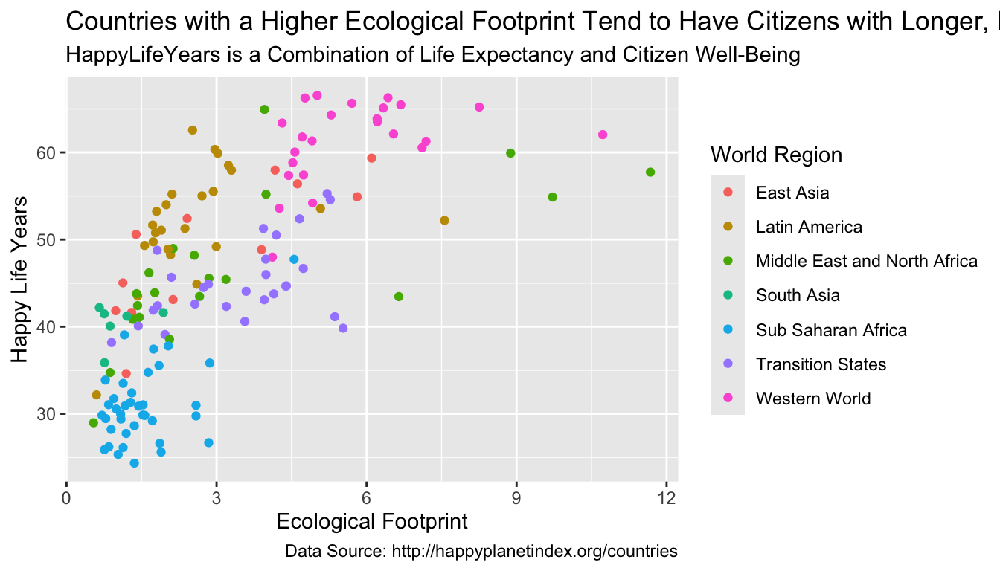
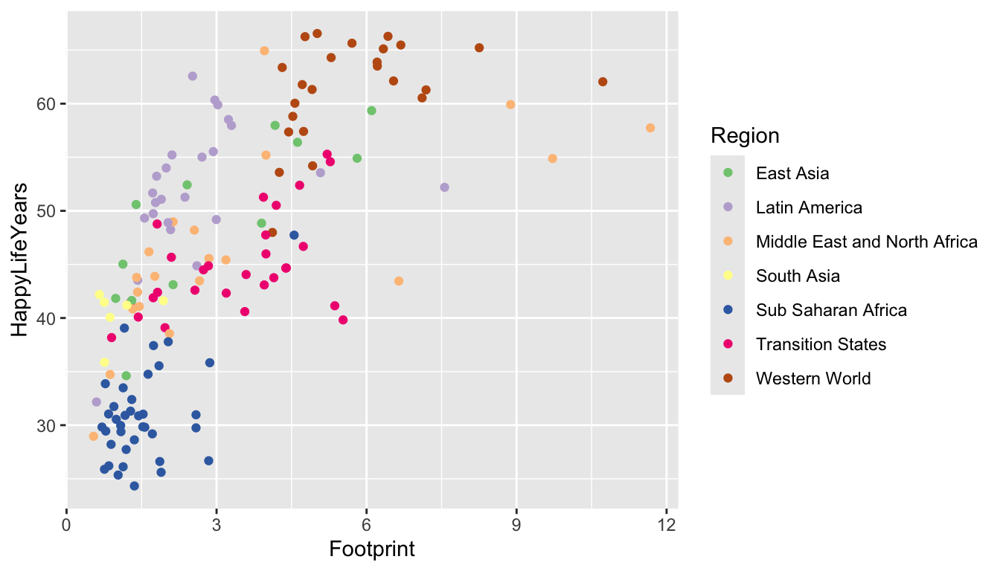
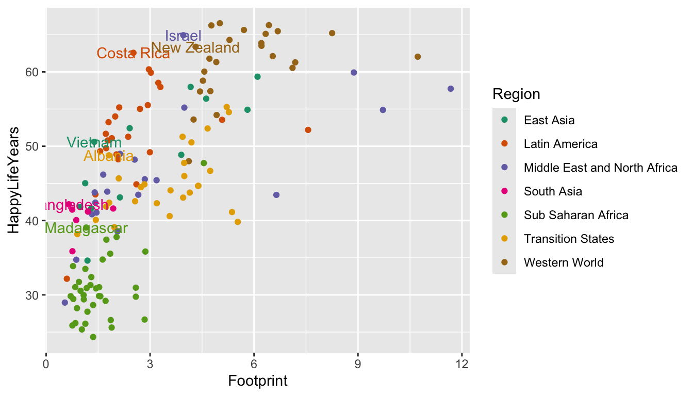
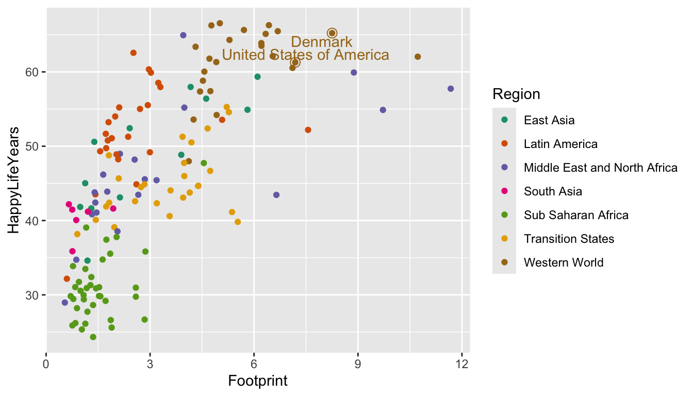
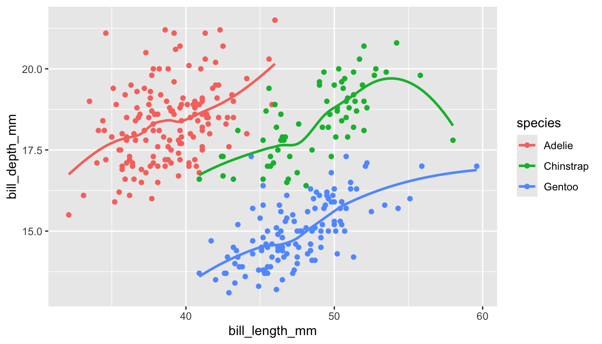

4 Communication with Quarto
Quarto and .qmd files and R Markdown and .qmd files are extremely similar. In the previous version of this section, I used R Markdown. Quarto has an advantage in that .qmd files also work with Python and Julia, so they are generally better for an all-purpose data scientist. If you spot any references to R Markdown or a .qmd file, just mentally convert R Markdown to Quarto and .rmd to qmd.
Goals:
Explain what reproducibility means and explain why it’s important for analyses to be reproducible.
Explain why
Quartoprovides more tools for making analyses reproducible than baseRwith Microsoft Word and than Microsoft Excel.Use the Code Options and the
QuartoText Options to modify anQuartofile so that it renders to a readable, professional .html file.Use titles, labels, colour scales, annotations, and themes to make your plots easy to read, including for people with Colour Vision Deficiency.
Overall, if we are making some quick plots just for us, some of the things on communication won’t apply. But, if we’re planning on sharing results (usually we are, eventually), then communication tools become much more important.
4.1 Reproducibility
We’ve been using Quarto for a while now, but have not yet talked about any of its features or how to do anything except insert a new code chunk. By the end of this section, we want to be able to use some of the Quarto options to make a nice-looking document (so that you can implement some of these options in your first mini-project).
Reproducibility is a concept that has recently gained popularity in the sciences for describing analyses that another researcher is able to repeat. That is, an analysis is reproducible if you provide enough information that the person sitting next to you can obtain identical results as long as they follow your procedures. An analysis is not reproducible if this isn’t the case.
Quarto makes it easy for you to make your analysis reproducible for a couple of reasons:
a
Quartofile will not render unless all of your code runs, meaning that you won’t accidentally give someone code that doesn’t work.Quartocombines the “coding” steps with the “write-up” steps into one coherent document that contains the code, all figures and tables, and any explanations.
We will “demo” a reproducible analysis in class.
If using Quarto for communication, you may want to utilize its spell-check feature. Go to Edit -> Check Spelling, and you’ll be presented with a spell-checker that lets you change the spelling of any words you may have misspelled.
4.1.1 R Scripts vs. Quarto
We’ve been using Quarto for the entirety of this course. But, you may have noticed that when you go to File -> New File to open a new Quarto Document file, there are a ton of other options. The first option is R Script. Go ahead and open a new R Script file now.
The file you open should be completely blank.
An R Script is a file that contains only R code.
It cannot have any text in it at all, unless that text is commented out with a #. For example, you could copy and paste all of the code that is inside a code chunk in a .qmd file to the .R file and run it line by line.
So, what are the advantages and disadvantages of using an R Script file compared to using an Quarto file? Let’s start with the advantages of Quarto. Quarto allows you to fully integrate text explanations of the code and results, the actual tables and figures themselves, and the code to make those tables and figures in one cohesive document. As we will see, if using R Scripts to write-up an analysis in Word, there is a lot of copy-pasting involved of results. For this reason, using Quarto often results in more reproducible analyses.
The advantage of an R Script would be in a situation where you really aren’t presenting results to anyone and you also don’t need any text explanations. This often occurs in two situations. (1) There are a lot of data preparation steps. In this case, you would typically complete all of these data prep steps in an R script and then write the resulting clean data to a .csv that you’d import in an Quarto file. (2) What you’re doing is complicated statistically. If this is the case, then the code is much more of a focus than the text or creating figures so you’d use an R Script.
Exercise 1. What’s the difference between R and Quarto?
Exercise 2. Why is a Quarto analysis more reproducible than a base R script analysis or a standard Excel analysis?
4.2 Quarto Files
Let’s talk a bit more about the components of the Quarto file used to make the reproducible analysis shown in class.
First, open a new Quarto file by clicking File -> New File -> Quarto Document and keep the new file so that it renders to HTML for now.
The first four to five lines at the top of the file make up the YAML (Yet Another Markup Language) header. We’ll come back to this at the end, as it’s the more frustrating part to learn.
Delete the code below the YAML header and then paste the following code chunks to your clean .qmd file in two separate chunks:
summary(cars)The cars data set is built into R so there’s no need to do anything to read it in (it already exists in R itself).
4.2.1 Code Chunk Options
First, render your new file (and give it a name, when prompted). You should see some code, a couple of results tables, and a scatterplot.
Chunk options allow you to have some control over what gets printed to the file that you render. For example, you may or may not want: the code to be printed, the figure to be printed, the tables to be printed, the tidyverse message to be printed, etc. There are a ton of chunk options to give us control over the code and output that is shown! We are going to just focus on a few that are more commonly used.
The options below are common execute options in Quarto.
-
echo. This is set to eithertrueto print the code orfalseto not print the code. In a blank line after```{r}, insert the following, which tellsQuartonot to print the code in that chunk:#| echo: false. Then, re-render your document to make sure that the code making the plot is actually hidden in the .html output.
You can keep adding other options on new lines. Some other options include:
warning. This is set to eithertrueto print warnings and messages orfalseto not print warnings and messages. For example, when we load in thetidyverse, a message automatically prints out. In that same code chunk, add a new line with#| warning: falseto get rid of the message. Re-render to make sure the message is actually gone.output. By default, this is set totrueand shows output of tables and figures. Change this tofalseto not print any output from running code. Practice adding a#| output: falseto the code chunk in yourQuartofile withsummary(cars)and re-render to make sure the output fromsummary(cars)is gone.eval.evalis set totrueif the code is to be evaluated andfalseif not.
Besides execute options, there are also options pertaining to the size of figures and figure captions. Some common examples include
fig-heightandfig-widthcontrol the height and width of figures. By default, these are both 7, but we can change thefig-heightandfig-widthto make figures take up less space in the rendered .html document (fig-height: 5, for example).fig-capadds a figure caption to your figure. Try inserting#| fig-cap: "Figure 1: caption text blah blah blah"to your chunk options for the chunk with the plot.
4.2.2 Global Options
What we have discussed so far is how to change code and output options for individual chunks of code. But, it can be a pain to add a certain option to every single chunk of code that we want the option to apply to. What we can do instead is change the global option for the code and/or output options so that they apply to all code chunks, unless specifically overwritten in that chunk.
We can change the execute options (echo, warning, eval, output, and more) globally by adding a line to the YAML header at the top of your Quarto file. Try adding
execute:
echo: falseas two new lines in between the title and format lines of the YAML header. This tells Quarto to not echo any code in any code chunk. However, note that you can change a local code chunk to have #| echo: true to override the global setting for that chunk.
Additional global execute options go on new lines:
execute:
echo: false
warning: falseThe non-execute options pertaining to figure size can be changed globally by specifying the option after the html part of the YAML header. The following changes all figure heights to be 2, unless a chunk overrides the global setting:
---
title: "Quarto Test"
execute:
echo: false
format:
html:
fig-height: 2
---We need to pay particular attention to the spacing of things in the YAML header. Notice, for example, that echo: false is indented by exactly two spaces. Try adding a space or deleting a space, and you’ll get an error!
4.2.3 Figures and Tables
We’ve already seen that Figures will pop up automatically (unless we set output: false), which is quite convenient. Making tables that look nice requires one extra step.
Delete the output: false option that you added earlier to the chunk with summary(cars). When you render your .qmd file now, results tables from head(cars) and summary(cars) look kind of ugly. We will focus on using the kable() function from the knitr package to make these tables much more aesthetically pleasing. Another option is to use the pander() function in the pander package. Both pander() and kable() are very simple functions to generate tables but will be more than sufficient for our purposes. To generate more complicated tables, see the xtable package or the kableExtra package.
To use these functions, simply add a |> pipe with the name of the table function you want to use. head(cars) |> kable() will make a nice-looking table with kable and head(cars) |> pander() will use pander(). Before using kable() from the knitr package, you’ll need to install the knitr package with install.packages("knitr") and load its library by adding the line library(knitr) above head(cars) |> kable(). Before using pander(), you’ll need to install the pander package with install.packages("pander") and then load its library by adding the line library(pander) above head(cars) |> pander(). Try these out in your Quarto file.
Which table do you like better in this case?
There are plenty of options for making tables look presentable, which we will discuss in the Exercises. Keep in mind that youmay not use these when making tables for yourself. They’re much more useful when you’re writing a report that you want to share with others.
4.2.4 Non-Code Options
Quarto combines R (in the code chunks, which we’ve already discussed) with the Markdown syntax, which comprises the stuff outside the code chunks, like what you’re reading right now!
There are so many Markdown options, but most of the time, if you want to do something specific, you can just Google it. The purpose of what follows is just to get us familiar with the very basics and things you will probably use most often.
Bullet Points and Sub-bullet Points: Denoted with a * and -, respectively. The sub bullets should be indented by 4 spaces. Note that bullet points are not code and should not appear in a code chunk.
* Bullet 1
* Bullet 2
- Sub bullet 1
- Sub bullet 2
- Sub bullet 3Everything in Markdown is very particular with spacing. Things often have to be very precise. I personally just love it, but it can be frustrating sometimes. For example, indenting a sub-bullet by 3 spaces instead of 4 spaces will not make a sub-bullet.
* Bullet 1
- Sub bullet 1Numbered Lists are the same as bulleted ones, except * is replaced with numbers 1., 2., etc.
Bold, Italics, Code. Surround text with __bold text__ to make text bold, _italic text_ to make text Italics, and backticks to make text look like Code.
Links: The simplest way to create a link to something on the web is to surround it with < > as in <https://www.youtube.com/watch?v=gJf_DDAfDXs>
If you want to name you link something other than the web address, use [name of link](https://www.youtube.com/watch?v=gJf_DDAfDXs), which should show up in your rendered document as “name of link” and, when clicked on, take you to the youtube video.
Headers: Headers are created with ## with fewer hashtags resulting in a bigger Header. Typing in #Big Header at the beginning of a line would make a big header, ### Medium Header would make a medium header, and ##### Small Header would make a small header. Headers are important because they get mapped to a table of contents.
There’s a lot of other stuff to explore: <a href=“https://rstudio.com/wp-content/uploads/2015/03/rmarkdown-reference.pdf” target=“blank> https://rstudio.com/wp-content/uploads/2015/03/rmarkdown-reference.pdf .
But, if you want to do something other than the basics, Google will definitely help.
4.2.5 YAML
We have briefly discussed what’s given at the top of every .qmd file: the YAML header. The YAML header is the most frustrating part to change because it’s the most particular with spacing.
In addition to controlling global chunk options, we can also use the YAML header to specify a theme from Bootswatch.
There are 25 themes in the Bootswatch project. The YAML header below uses the darkly theme. Try pasting in this YAML header and rendering the document to see the outputted theme.
---
title: "Quarto Test"
execute:
echo: false
warning: false
format:
html:
fig-height: 2
theme: darkly
self-contained: true
---We can also add a table of contents, which will create a table of contents based on headers you have created with ##.
---
title: "Quarto Test"
execute:
echo: false
warning: false
format:
html:
fig-height: 2
theme: darkly
toc: true
self-contained: true
---There are so many other options available for theming, and, if you know any css, you can provide your own .css file to customize the theme.
For the following exercises, we will use the built-in R data set mtcars, which has observations on makes and models of cars. The variables we will be using are:
-
cyl, the number of cylinders a car has -
mpg, the mileage of the car, in miles per gallon
Because the data set is loaded every time R is started up, there is no need to have a line that reads in the data set. We can examine the first few observations with
head(mtcars)
#> mpg cyl disp hp drat wt qsec vs am gear carb
#> Mazda RX4 21.0 6 160 110 3.90 2.620 16.46 0 1 4 4
#> Mazda RX4 Wag 21.0 6 160 110 3.90 2.875 17.02 0 1 4 4
#> Datsun 710 22.8 4 108 93 3.85 2.320 18.61 1 1 4 1
#> Hornet 4 Drive 21.4 6 258 110 3.08 3.215 19.44 1 0 3 1
#> Hornet Sportabout 18.7 8 360 175 3.15 3.440 17.02 0 0 3 2
#> Valiant 18.1 6 225 105 2.76 3.460 20.22 1 0 3 1Exercise 3. Create a table showing the mean mpg for each cyl group (cyl stands for cylinder and can be 4-cylinder, 6-cylinder, or 8-cylinder) with both kable() and pander().
Remember to call the knitr library if using kable() and the pander library if using pander().
Exercise 4. Type ?kable into your console window and scroll through the Help file. Change the rounding of the mean so that it only displays one number after the decimal. Then, add a caption to the table that says “My First Table Caption!!”
The arguments ou will need to change are digits and caption.
Exercise 5. Create a new R chunk and copy and paste the following into your new R chunk. Don’t worry about what factor() is doing: we will cover that soon!
Modify the R chunk so that: (a) the figure height is 3, (b) the code from the R chunk shows in the .html file, (c) the table from running head(cars) is hidden in the .html file. Make (b) and (c) a local chunk option, but set (a) as a global option that applies to all of your R chunks.
4.3 Communication Options for ggplot2 Plots
When we first introduced plotting, we used histograms, boxplots, frequency plots, bar plots, scatterplots, line plots, and more to help us explore our data set. You will probably make many different plots in a single analysis, and, when exploring, it’s fine to keep these plots unlabeled and untitled with the default colour scheme and theme. They’re just for you, and you typically understand the data and what each variable means.
However, when you’ve finished exploring and you’d like to communicate your results, both graphically and numerically, you’ll likely want to tweak your plots to look more aesthetically pleasing. You certainly wouldn’t be presenting every exploratory plot you made so this tweaking needs to be done on only a few plots. You might consider:
changing the x-axis and y-axis labels, changing the legend title, adding a title, adding a subtitle, and adding a caption with
+ labs()changing the limits of the x-axis and y-axis with
+ xlim()and+ ylim()changing the colour scheme to be more visually appealing and easy to see for people with colour-vision-deficiency (CVD)
labeling certain points or lines with
+ geom_label()or+ geom_text()changing from the default theme with
+ theme_<name_of_theme>()
The bullet about labeling only certain points is the data set is one reason why we are doing this second ggplot2 section now, as opposed to immediately after the first ggplot2 section. As we will see, we’ll make use of combining what we’ve learned in dplyr to help us label interesting observations in our plots.
The Data
The Happy Planet Index (HPI) is a measure of how efficiently a country uses its ecological resources to give its citizens long “happy” lives. You can read more about this data here: here.
But, the basic idea is that the HPI is a metric that computes how happy and healthy a country’s citizens are, but adjusts that by that country’s ecological footprint (how much “damage” the country does to planet Earth). The data set was obtained from https://github.com/aepoetry/happy_planet_index_2016. Variables in the data set are:
-
HPIRank, the rank of the country’s Happy Planet Index (lower is better) -
Country, the name of the country -
LifeExpectancy, the average life expectancy of a citizen (in years) -
Wellbeing, the average well being score (on a scale from 1 - 10). See the ladder question in the documentation for how this was calculated. -
HappyLifeYears, a combination ofLifeExpectancyandWellbeing -
Footprint, the ecological footprint per person (higher footprint means the average person in the country is less ecologically friendly)
Read in the data set with
library(tidyverse)
hpi_df <- read_csv("data/hpi-tidy.csv")
head(hpi_df)
#> # A tibble: 6 × 11
#> HPIRank Country LifeE…¹ Wellb…² Happy…³ Footp…⁴ Happy…⁵ Popul…⁶ GDPca…⁷
#> <dbl> <chr> <dbl> <dbl> <dbl> <dbl> <dbl> <dbl> <dbl>
#> 1 109 Afghanistan 48.7 4.76 29.0 0.540 36.8 3.44e7 1207.
#> 2 18 Albania 76.9 5.27 48.8 1.81 54.1 3.20e6 8592.
#> 3 26 Algeria 73.1 5.24 46.2 1.65 52.2 3.55e7 8433.
#> 4 127 Angola 51.1 4.21 28.2 0.891 33.2 1.91e7 6186.
#> 5 17 Argentina 75.9 6.44 55.0 2.71 54.1 4.04e7 16012.
#> 6 53 Armenia 74.2 4.37 41.9 1.73 46.0 3.09e6 5463.
#> # … with 2 more variables: GovernanceRank <chr>, Region <chr>, and
#> # abbreviated variable names ¹LifeExpectancy, ²Wellbeing, ³HappyLifeYears,
#> # ⁴Footprint, ⁵HappyPlanetIndex, ⁶Population, ⁷GDPcapitaLet’s look at the relationship between HappyLifeYears and Footprint for countries of different Regions of the world.
ggplot(data = hpi_df, aes(x = Footprint, y = HappyLifeYears,
colour = Region)) +
geom_point()
Which region seems to have the most variability in their Ecological Footprint?
4.3.0.1 Change Labels and Titles
We can add + labs() to change various labels and titles throughout the plot:
ggplot(data = hpi_df, aes(x = Footprint, y = HappyLifeYears,
colour = Region)) +
geom_point() +
labs(title = "Countries with a Higher Ecological Footprint Tend to Have Citizens with Longer, Happier Lives",
## add title
subtitle = "HappyLifeYears is a Combination of Life Expectancy and Citizen Well-Being",
## add subtitle (smaller text size than the title)
caption = "Data Source: http://happyplanetindex.org/countries",
## add caption to the bottom of the figure
x = "Ecological Footprint", ## change x axis label
y = "Happy Life Years", ## change y axis label
colour = "World Region") ## change label of colour legend
Any aes() that you use in your plot gets its own label and can be changed by name_of_aethetic = "Your Label". In the example above, we changed all three aes() labels: x, y, and colour.
What is the only text on the plot that we aren’t able to change with labs()?
4.3.0.2 Changing Axis Limits
We can also change the x-axis limits and the y-axis limits to, for example, start at 0 for the y-axis:
ggplot(data = hpi_df, aes(x = Footprint, y = HappyLifeYears,
colour = Region)) +
geom_point() +
ylim(c(0, 70))
In this case, it makes the points on the plot a bit harder to see. You can also change where and how often tick marks appear on the x and y-axes. For special things like this, it is often best to just resort to Google (“ggplot how to change x-axis breaks tick marks” should help).
4.3.0.3 Changing A Colour Scale
We want to use our graphics to communicate with others as clearly as possible. We also want to be as inclusive as possible in our communications. This means that, if we choose to use colour, our graphics should be made so that a colour-vision-deficient (CVD) person can read our graphs.
About 4.5% of people are colour vision deficient, so it’s actually quite likely that a CVD person will view the graphics that you make (depending on how many people you share it with) More Information on CVD.
The colour scales from R Colour Brewer are readable for common types of CVD. A list of scales can be found here.
We would typically use the top scales if the variable you are colouring by is ordered sequentially (called seq for sequential, like grades in a course: A, B, C, D, F), the bottom scales if the variable is diverging (called div for diverging, like Republican / Democrat lean so that the middle is colourless), and the middle set of scales if the variable is not unordered and is categorical (called qual for qualitative like the names of different treatment drugs for a medical experiment).
In which of those 3 situations are we in for the World Region graph?
If we want to use one of these colour scales, we just need to add scale_colour_brewer() with the name of the scale we want to use.
ggplot(data = hpi_df, aes(x = Footprint, y = HappyLifeYears,
colour = Region)) +
geom_point() +
scale_colour_brewer(palette = "Accent")
Try changing the palette to something else besides "Accent". Do you like the new palette better or worse?
One more option to easily change the colour scale is to use the viridis package. The base viridis functions automatically load with ggplot2 so there’s no need to call the package with library(viridis). The viridis colour scales were made to be both aesthetically pleasing and CVD-friendly.
ggplot(data = hpi_df, aes(x = Footprint, y = HappyLifeYears,
colour = Region)) +
geom_point() +
scale_colour_viridis_d(option = "plasma")A drawback of the viridis package is that the yellow can be really hard to see (at least for me).
Read the examples section of the Help file for ?scale_colour_viridis_d. What’s the difference between scale_colour_viridis_d(), ?scale_colour_viridis_c(), and scale_colour_viridis_b()?
4.3.0.4 Labeling Points or Lines of Interest
One goal we might have with communication is highlighting particular points in a data set that show something interesting. For example, we might want to label the points on the graph corresponding to the countries with the highest HPI in each region: these countries are doing the best in terms of using resources efficiently to maximize citizen happiness. Or, we might want to highlight some “bad” example of countries that are the least efficient in each region. Or, we might want to label the country that we are from on the graph.
All of this can be done with geom_label(). Let’s start by labeling all of the points. geom_label() needs one aesthetic called label which is the name of the column in the data set with the labels you want to use.
ggplot(data = hpi_df, aes(x = Footprint, y = HappyLifeYears,
colour = Region)) +
geom_point() +
scale_colour_brewer(palette = "Dark2") +
geom_label(aes(label = Country))
Yikes! It’s quite uncommon to want to label all of the points. Let’s see if we can instead label each country with the best HPI in that country’s region. To do so, we first need to use our dplyr skills to create a new data set that has these 7 “best” countries. When we used group_by(), we typically used summarise() afterward. But, group_by() works with filter() as well!
plot_df is a data frame that only has the rows with the smallest HPIRank in each Region.
Now that we have this new data set, we can use it within geom_label(). Recall that the data = argument in ggplot() carries on through all geoms unless we specify otherwise. Now is our chance to “specify otherwise” by including another data = argument within geom_label():
ggplot(data = hpi_df, aes(x = Footprint, y = HappyLifeYears,
colour = Region)) +
geom_point() +
scale_colour_brewer(palette = "Dark2") +
geom_label(data = plot_df, aes(label = Country))
The show.legend = FALSE argument below tells geom_label() that we do not want its aesthetics to appear in the legend.
ggplot(data = hpi_df, aes(x = Footprint, y = HappyLifeYears,
colour = Region)) +
geom_point(aes(colour = Region)) +
scale_colour_brewer(palette = "Dark2") +
geom_label(data = plot_df, aes(label = Country), show.legend = FALSE)
A common issue, even with few labels, is that some of the labels could overlap. The ggrepel package solves this problem by including a geom_label_repel() geom that automatically repels any overlapping labels:
library(ggrepel)
ggplot(data = hpi_df, aes(x = Footprint, y = HappyLifeYears,
colour = Region)) +
geom_point() +
scale_colour_brewer(palette = "Dark2") +
geom_label_repel(data = plot_df, aes(label = Country),
show.legend = FALSE) 
And a final issue with the plot is that it’s not always very clear which point on the plot is being labeled. A trick used in the R for Data Science book is to surround the points that are being labeled with an open circle using an extra geom_point() function:
ggplot(data = hpi_df, aes(x = Footprint, y = HappyLifeYears, colour = Region)) +
geom_point() +
scale_colour_brewer(palette = "Dark2") +
geom_label_repel(data = plot_df, aes(label = Country), show.legend = FALSE) +
geom_point(data = plot_df, size = 3, shape = 1, show.legend = FALSE) 
In the code above, shape = 1 says that the new point should be an open circle and size = 3 makes the point bigger, ensuring that it goes around the original point. show.legend = FALSE ensures that the larger open circles don’t become part of the legend.
We can use this same strategy to label specific countries. I’m interested in where the United States of America falls on this graph because I’m from the U.S. I’m also interested in where Denmark falls because that’s the country I’m most interested in visiting. Feel free to replace those countries with any that you’re interested in!
plot_df_us <- hpi_df |>
filter(Country == "United States of America" | Country == "Denmark")
ggplot(data = hpi_df, aes(x = Footprint, y = HappyLifeYears,
colour = Region)) +
geom_point() +
scale_colour_brewer(palette = "Dark2") +
geom_point(data = plot_df_us, size = 3, shape = 1,
show.legend = FALSE) +
geom_label_repel(data = plot_df_us, aes(label = Country),
show.legend = FALSE)
4.3.0.5 Plot Themes
Plot themes are an easy way to change many aspects of your plot with an overall theme that someone developed. The default theme for ggplot2 graphs is theme_grey(), which is the graph with the grey background that we’ve been using in the entirety of this class. The 7 other themes are given in R for Data Science in Figure 28.3.
My favorite theme is definitely theme_minimal(). This theme gives a really clean look, so we will likely start using this theme in plots much more often now.
However, there are many more choices in the ggthemes package. Load the package with library(ggthemes) and check out https://yutannihilation.github.io/allYourFigureAreBelongToUs/ggthemes/ for a few of the themes in the package. My personal favorites, all given below, are theme_solarized(), theme_fivethirtyeight(), and theme_economist(), but choosing a theme is mostly a matter of personal taste.
library(ggthemes)
ggplot(data = hpi_df, aes(x = Footprint, y = HappyLifeYears,
colour = Region)) +
geom_point() +
scale_colour_brewer(palette = "Dark2") +
geom_point(data = plot_df_us, size = 3, shape = 1, show.legend = FALSE) +
geom_label_repel(data = plot_df_us, aes(label = Country), show.legend = FALSE) +
theme_solarized()
ggplot(data = hpi_df, aes(x = Footprint, y = HappyLifeYears,
colour = Region)) +
geom_point() +
scale_colour_brewer(palette = "Dark2") +
geom_point(data = plot_df_us, size = 3, shape = 1, show.legend = FALSE) +
geom_label_repel(data = plot_df_us, aes(label = Country), show.legend = FALSE) +
theme_fivethirtyeight()
ggplot(data = hpi_df, aes(x = Footprint, y = HappyLifeYears,
colour = Region)) +
geom_point() +
scale_colour_brewer(palette = "Dark2") +
geom_point(data = plot_df_us, size = 3, shape = 1, show.legend = FALSE) +
geom_label_repel(data = plot_df_us, aes(label = Country), show.legend = FALSE) +
theme_economist()There’s still much more we can do with ggplot2. In fact, there are entire books on it. But, for most other specializations, we can usually use Google to help us!
Exercise 6. Change the following aspects of the plot given below.
library(palmerpenguins) ## will need to install.packages("palmerpenguins")
## if we have not used this package in class yet.
ggplot(data = penguins, aes(x = bill_length_mm, y = bill_depth_mm,
colour = species)) +
geom_point() +
geom_smooth(se = FALSE)
Change the
xaxis label to be"Bill Length (mm)", theyaxis label to be"Bill Depth (mm)", and thecolourscale to be"Species".Change the default colour scale with
scale_colour_viridis_d().Change the default theme to a theme of your choice.
Add a
titleto the plot.
4.4 Practice
In general, practice exercises will be split between exercises that will be done together as a class and exercises that you will do in groups or on your own. The purpose of the class exercises is to give some guidance on how we might think logically through some of the code and the results. The purpose of the group exercises and the on your own exercises is so that you have a chance to practice what you’ve learned with your table or on your own.
4.4.1 Class Exercises
Some data sets exist within specific R packages. For example, Jenny Bryan, who is quite famous in the stats/data science community, has put together the gapminder package so that users in R have access to a specific data set on countries throughout the world. https://github.com/jennybc/gapminder.
To load a data set within a specific R package, you first need to install the package with install.packages("gapminder") and then load the package itself:
Then, name the data set something. In this case, the name of the data set is gapminder, but it’s not always the same name as the package itself. We will name the data set country_df.
country_df <- gapminderExplore the data set with head(country_df) and ?gapminder before proceeding to the following exercises.
Class Exercise 1. Make a line graph that shows the relationship between lifeExp and year for each of the countries in the data set, faceting the graph by continent and also colouring by continent (though this is redundant). Add an x-axis label, a y-axis label, a legend label, and a title to the graph.
Class Exercise 2. Change the colour palette to be CVD-friendly using either scale_colour_brewer() or scale_colour_viridis_d().
Class Exercise 3. We can see a couple of interesting trends in life expectancy. There is one country in Africa and one country in Asia that sees a sharp decline in life expectancy at one point. In Europe, there is one country that has a substantially lower life expectancy than the rest in the 1950s but catches up to other European countries by the 2000s. Use filter() to create a data set that only has these 3 countries. Then, use geom_label() to label all three countries on your plot.
Class Exercise 4. Google the history of the countries in Africa and Asia that you just labeled. Add a very short description of why each country experienced a dip in life expectancy as a caption in your graph.
Class Exercise 5. Suppose that we want the legend to appear on the bottom of the graph. Without using an entirely different theme, use Google to figure out how to move the legend from the right-hand side to the bottom.
Class Exercise 6. If there are a lot of overlapping points or overlapping lines, we can use alpha to control the transparency of the lines. Google “change transparency of lines in ggplot” and change the alpha so that the lines are more transparent.
Class Exercise 7. Change the theme of your plot to a theme in the ggthemes package. Then, change the order of your two commands to change the legend position and to change the overall theme. What happens?
Class Exercise 8. Modify your .qmd file so that:
only the figure that you made in the previous exercise renders on your .html file. (Hint: use global options to help with this).
none of the code gets printed.
the warnings/messages that
Rprints by default are hidden in all code chunks.the figure height is 4 instead of the default 7.
4.4.2 Your Turn
Your Turn 1. Your friend Chaz is doing a data analysis project in Excel to compare the average GPA of student athletes with the average GPA of non-student athletes. He has two variables: whether or not a student is a student athlete and GPA. He decides that a two-sample t-test is an appropriate procedure for this data (recall from Intro Stat that this procedure is appropriate for comparing a quantitative response (GPA) across two groups). Here are the steps of his analysis.
He writes the null and alternative hypotheses in words and in statistical notation.
He uses Excel to make a set of side-by-side boxplots. He changes the labels and the limits on the y-axis using Point-and-Click Excel operations.
From his boxplots, he see that there are 3 outliers in the non-athlete group. These three students have GPAs of 0 because they were suspended for repeatedly refusing to wear masks indoors. Chaz decides that these 3 students should be removed from the analysis because, if they had stayed enrolled, their GPAs would have been different than 0. He deletes these 3 rows in Excel.
Chaz uses the t.test function in Excel to run the test. He writes down the degrees of freedom, the T-stat, and the p-value.
Chaz copies his graph to Word and writes a conclusion in context of the problem.
State 2 aspects of Chaz’s analysis that are not reproducible.
Your Turn 2. Go back to the line plot that you made of the 5 names in the babynames data set. Add a label with the name to each of the lines with geom_label().
Your Turn 3. Examine the mtcars data set again. The code chunk below adds the car_name variable to the data set (no need to worry about what this code is doing specifically at this point). With mtcars, create a scatterplot of mpg on the y-axis and wt on the x-axis. Then, label the point for the car in the data set that has the highest mpg with its car_name.
mtcars <- mtcars |> rownames_to_column() |> rename(car_name = rowname)
mtcars
#> car_name mpg cyl disp hp drat wt qsec vs am gear carb
#> 1 Mazda RX4 21.0 6 160.0 110 3.90 2.620 16.46 0 1 4 4
#> 2 Mazda RX4 Wag 21.0 6 160.0 110 3.90 2.875 17.02 0 1 4 4
#> 3 Datsun 710 22.8 4 108.0 93 3.85 2.320 18.61 1 1 4 1
#> 4 Hornet 4 Drive 21.4 6 258.0 110 3.08 3.215 19.44 1 0 3 1
#> 5 Hornet Sportabout 18.7 8 360.0 175 3.15 3.440 17.02 0 0 3 2
#> 6 Valiant 18.1 6 225.0 105 2.76 3.460 20.22 1 0 3 1
#> 7 Duster 360 14.3 8 360.0 245 3.21 3.570 15.84 0 0 3 4
#> 8 Merc 240D 24.4 4 146.7 62 3.69 3.190 20.00 1 0 4 2
#> 9 Merc 230 22.8 4 140.8 95 3.92 3.150 22.90 1 0 4 2
#> 10 Merc 280 19.2 6 167.6 123 3.92 3.440 18.30 1 0 4 4
#> 11 Merc 280C 17.8 6 167.6 123 3.92 3.440 18.90 1 0 4 4
#> 12 Merc 450SE 16.4 8 275.8 180 3.07 4.070 17.40 0 0 3 3
#> 13 Merc 450SL 17.3 8 275.8 180 3.07 3.730 17.60 0 0 3 3
#> 14 Merc 450SLC 15.2 8 275.8 180 3.07 3.780 18.00 0 0 3 3
#> 15 Cadillac Fleetwood 10.4 8 472.0 205 2.93 5.250 17.98 0 0 3 4
#> 16 Lincoln Continental 10.4 8 460.0 215 3.00 5.424 17.82 0 0 3 4
#> 17 Chrysler Imperial 14.7 8 440.0 230 3.23 5.345 17.42 0 0 3 4
#> 18 Fiat 128 32.4 4 78.7 66 4.08 2.200 19.47 1 1 4 1
#> 19 Honda Civic 30.4 4 75.7 52 4.93 1.615 18.52 1 1 4 2
#> 20 Toyota Corolla 33.9 4 71.1 65 4.22 1.835 19.90 1 1 4 1
#> 21 Toyota Corona 21.5 4 120.1 97 3.70 2.465 20.01 1 0 3 1
#> 22 Dodge Challenger 15.5 8 318.0 150 2.76 3.520 16.87 0 0 3 2
#> 23 AMC Javelin 15.2 8 304.0 150 3.15 3.435 17.30 0 0 3 2
#> 24 Camaro Z28 13.3 8 350.0 245 3.73 3.840 15.41 0 0 3 4
#> 25 Pontiac Firebird 19.2 8 400.0 175 3.08 3.845 17.05 0 0 3 2
#> 26 Fiat X1-9 27.3 4 79.0 66 4.08 1.935 18.90 1 1 4 1
#> 27 Porsche 914-2 26.0 4 120.3 91 4.43 2.140 16.70 0 1 5 2
#> 28 Lotus Europa 30.4 4 95.1 113 3.77 1.513 16.90 1 1 5 2
#> 29 Ford Pantera L 15.8 8 351.0 264 4.22 3.170 14.50 0 1 5 4
#> 30 Ferrari Dino 19.7 6 145.0 175 3.62 2.770 15.50 0 1 5 6
#> 31 Maserati Bora 15.0 8 301.0 335 3.54 3.570 14.60 0 1 5 8
#> 32 Volvo 142E 21.4 4 121.0 109 4.11 2.780 18.60 1 1 4 2Your Turn 4. The theme() function is a way to really specialise your plot. We will explore some of these in this exercise. Using only options in theme() or options to change colours, shapes, sizes, etc., create the ugliest possible ggplot2 graph that you can make. You may not change the underlying data for this graph, but your goal is to investigate some of the options given in theme(). A list of theme options is given in this link.
ggplot(data = hpi_df, aes(x = Footprint, y = HappyLifeYears,
colour = Region)) +
geom_point()